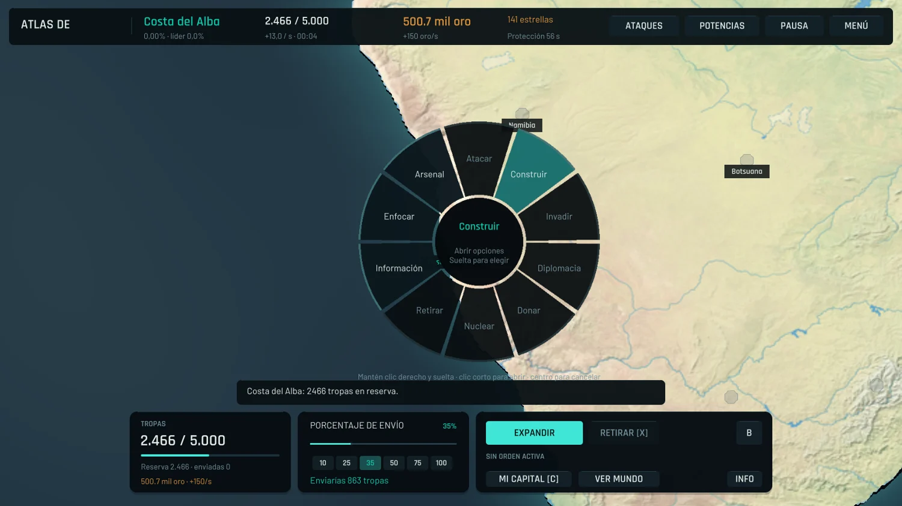

01
EscritorioEn desarrollo · 0.4.5-dev
JARVIS Desktop
Aplicación de escritorio para Windows con gestión de tareas, memoria SQLite, servicios nativos y ejecución por capacidades.
Jesús Leonardo Martínez Rodríguez
Java, Python y C#. Aplicaciones de escritorio, desarrollo web, videojuegos y automatización.
Torreón, Coahuila, México.
Componentes y flujo de una operación.
La interfaz presenta el estado y solicita capacidades mediante contratos explícitos.
Escritorio
Web y móvil
Videojuegos
Automatización
Código fuente, documentación técnica y estado de desarrollo de los proyectos.
10 proyectos
Aplicación de escritorio para Windows con gestión de tareas, memoria SQLite, servicios nativos y ejecución por capacidades.
Estrategia territorial sobre un mapa terrestre: economía, ciudades, diplomacia, comercio y combate.

Gestión jurídica de expedientes, clientes y movimientos, con colaboración organizada por despacho.
Cliente móvil con expedientes, calendario y colaboración de equipo para el ecosistema Judicial Managment.
Página de distribución y acceso al producto, con registro, confirmación de correo y descarga de escritorio.
Operación de pequeños negocios: inventario, ventas, clientes y un backend local.
Biblioteca digital con catálogo, búsqueda y administración de archivos PDF y EPUB.
Tickets privados, moderación, archivos temporales y recordatorios de progresión para una comunidad.
Prototipo cooperativo de supervivencia: oleadas, arsenal, compras y lógica de combate en servidor.
Scripts de construcción y comprobación para un flujo de modelos y recursos de juego.
No hay proyectos para esta búsqueda. Prueba con otro término.
Desarrollador de software con formación autodidacta. Experiencia en proyectos personales de aplicaciones, simulación e integración de herramientas.
Descargar CV en PDF ↗Lenguajes: Java, Python, C#, TypeScript y JavaScript. Tecnologías utilizadas en los proyectos: React, Electron, Node.js, Unity y SQLite.
Experiencia laboral práctica en el ensamblaje de equipos de cómputo, con familiaridad en componentes y su integración.
Universidad Autónoma de Coahuila.
En curso · Conclusión prevista: diciembre de 2026.